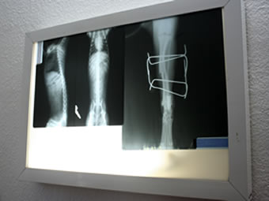

El especialista en cuestóon, siempre es la mejor opción
Rayos X
Somos una clínica de referencia para la toma de Rayos X. Muchos colegas solicitan nuestros servicios como apoyo a sus clínicas veterinarias. Esta es una prueba de gabinete muy útil que en cuestión de minutos contamos con el revelado y la placa seca, lista para ayudar en el diagnóstico. Podemos ver fracturas, gestaciones avanzadas, objetos en los intestinos que su mascota haya ingerido, cálculos en los riñones o la vejiga, así como infinidad de patologías que nos ayudan a dar diagnósticos certeros.
Muchas pruebas rápidas son elaboradas en nuestras instalaciones y los resultados los tenemos en minutos, para así poder tomar decisiones correctas en la atención de nuestros pacientes; Cuando se requieren pruebas más laboriosas contamos con el apoyo de 2 grandes empresas: 1.- Laboratorios Biomédicos que cuentan con varias sucursales distribuidas por la ciudad, es uno de los mejores laboratorios en Mérida y 2.- Carpemor con sede en el D.F. Laboratorio de Referencia Internacional para Laboratorios y corren cualquier tipo de prueba que no se realice incluso en el país. Como Ud. Podrá apreciar hemos procurado las mejores relaciones para brindarle la mejor opción en pruebas de laboratorio. Laboratorios IDEXX están especializados en veternaria y nos proporcionan mchos kits de diagnóstico rápido específicos para muchas de las enfermedades que padecen.

Laboratorio
Muchas pruebas rápidas son elaboradas en nuestras instalaciones y los resultados los tenemos en minutos, para así poder tomar decisiones correctas en la atención de nuestros pacientes; Cuando se requieren pruebas más laboriosas contamos con el apoyo de 2 grandes empresas: 1.- Laboratorios Biomédicos que cuentan con varias sucursales distribuidas por la ciudad, es uno de los mejores laboratorios en Mérida y 2.- Carpemor con sede en el D.F. Laboratorio de Referencia Internacional para Laboratorios y corren cualquier tipo de prueba que no se realice incluso en el país. Como Ud. Podrá apreciar hemos procurado las mejores relaciones para brindarle la mejor opción en pruebas de laboratorio. Laboratorios IDEXX están especializados en veternaria y nos proporcionan mchos kits de diagnóstico rápido específicos para muchas de las enfermedades que padecen.